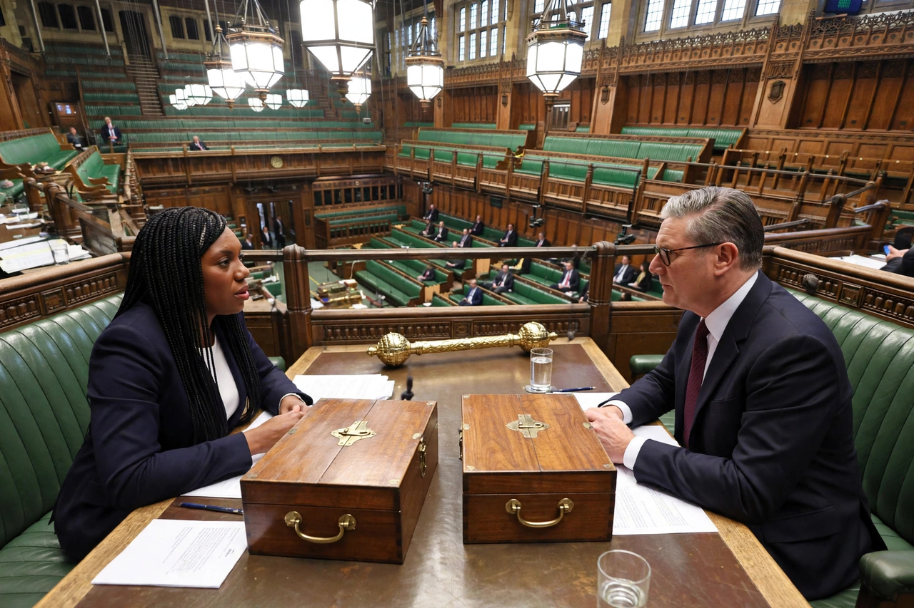

Leader of the Opposition
From Wikipedia, the free encyclopedia

The Leader of the Opposition is the politician who leads the Official Opposition in a parliamentary system — normally the leader of the largest party not in government. The office, formalised in Britain in the nineteenth century and given statutory recognition and a salary in 1937, heads a Shadow Cabinet and is styled a 'prime minister in waiting'. Equivalent offices exist across the Commonwealth and many other parliamentary democracies.
In the United Kingdom
The UK Leader of the Opposition sits directly opposite the Prime Minister in the Commons, questions them at Prime Minister's Questions (six questions weekly), receives briefings on national security and state occasions, and is usually made a Privy Counsellor. The Ministerial and other Salaries Act 1975 provides the salary; 'Short money' funds the opposition's parliamentary work. If the governing party loses its majority, the monarch may invite the Leader of the Opposition to form a government.
Elsewhere
In India the Leader of the Opposition in Lok Sabha requires the largest opposition party to hold at least 10% of seats for recognition — a threshold that left the office vacant from 2014 to 2024. Australia, Canada, New Zealand and many Caribbean states have similar statutory offices; in presidential systems the role is informal, fulfilled by party leaders in the legislature.
Function
The office institutionalises dissent: it embodies the principle of a loyal opposition — opposing the government while accepting the constitutional order — and guarantees the alternative government visibility, resources and scrutiny time, including opposition days for debates of its choosing.